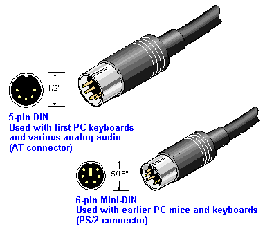
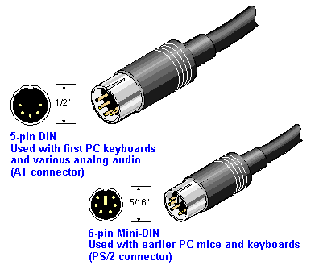
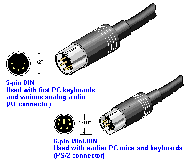

A system is a general term that can mean many things, but here we are referring to information systems, hardware that runs an operating system and can access networks. These systems come in many shapes and sizes, and although designed for different purposes, they share most of the same core technology.
Server
A server is a system used to deliver information to clients. Although hardware designed to be a full time server might look different, a server is actually special system software and is referred to as a service. At a home or small business, a desktop with the right software can also be used as a server. In networking terms, a server is a system that serves requests for data, and clients are systems that request data. A client can be any system, typically a desktop, laptop, or cell phone, but even a server can act as a client when it needs something from a network. For example a server is a client when it needs to store data on a backup server, to authenticate users from a authentication server, or even to get software updates over the network. The hardware designed to run as a server in a datacenter might look different, but the general ideas and terms are the same. They both have power supplies, motherboards, CPUs, memory and similar I/O (Input/Output) devices.
Laptop
Similar to a desktop, a laptop is an individual user system, designed to be more portable than a desktop, but can still access the same networks and has hardware with the same ideas that are used in desktops and servers.
Cellphone and Tablet
Tablets and cell phones are lumped together because they often run the same type of operating system and are getting hard to find differences in. Some large phones are the same size as some small tablets. They are designed to be even more portable than a laptop, but can still access the same networks using hardware with the same ideas that are used in desktop and server hardware.
Now that we've defined what they are, lets look at some of the things they share.
Power Supply
An electrical system that converts AC current from the wall outlet into the DC currents
required by the computer circuitry. In a desktop or laptop, +5, -5, +12 and -12 voltages are generated. The 3 and 5 volts are used for the electronic circuitry, and the 12 volts are required for the drives. Fortunately, power supplies usually
come preinstalled with the PC case and are standardized between Desktop and Laptops, so you will probably never have to choose between power supplies, but if you do, here are a few things to look for in a power supply:
Keyboards
Most work well for all systems using a USB bus connection. Old keyboards plug into either a 5-pin DIN called an AT connector, or a 6-pin mini-DIN called a PS/2 connector on the motherboard. Adapters also exist to connect a 5-pin plug to a 6-pin socket.

Key names - Each symbol key on a keyboard has a specific name. Some symbol key names are listed:
: = colon
; = semi colon
\ = backslash
/ = forwardslash
| = pipe (shift + \)
~ = tilde
[ ] brackets
{} curly brackets
_ underscore (shift + hyphen)
@ ampersand
# hash or pound
^ karat
() parenthises
Mouse
It is called a mouse because it more or less resembles one, with the cord being the mouse's tail, but as technology moves on, wireless and other features like trackball, touch pad, and touch screens might make you wonder where the name came from.
Mice also use USB or blue tooth, but you might still find one with a PS/2 or DB-9 serial connector.